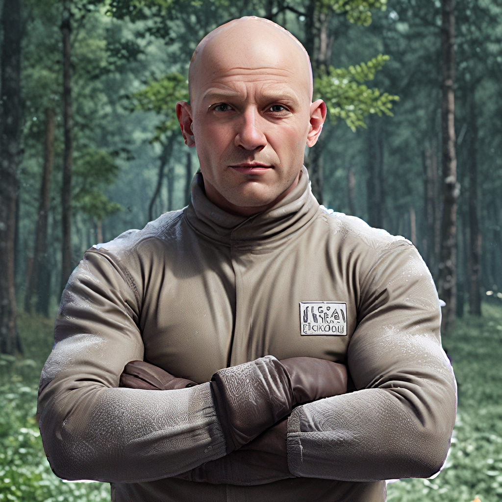

A Háttércsere Funkció Használatának Útmutatója
A Háttércsere funkció az AiCasso-ban tökéletes, ha szeretnéd kicserélni a háttérképet a képedben. Akár csak a háttér eltávolítására, akár annak másra cserélésére van szükséged, az AiCasso nagyon egyszerűvé teszi. Nem kell technikai dolgok miatt aggódnod—csak írd le, mit szeretnél, és az AiCasso elvégzi a többit.
Hogyan Működik:
Bemeneti Kép:
Prompt 1:
"Távolítsd el a hátteret"
Eredmény 1:
Prompt 2:
"Cseréld ki a hátteret egy erdőre, ne csak távolítsd el, az alfa maszkolás kikapcsolásával. Használj 240-es előtér küszöböt, 20-as háttér küszöböt és 5-ös eróziós méretet az alfa maszkoláshoz."
Eredmény 2:

Opcionális Paraméterek
Ha szeretnél egy személyes érintést hozzáadni vagy finomítani az eredményeket, itt van néhány lehetőség, amivel játszhatsz:
- Csak Eltávolítás: Ha csak a hátteret szeretnéd eltávolítani, és nem akarsz semmivel helyettesíteni, ez a legjobb választás. Olyan, mintha megnyomnád a tiszta lap gombot.
- Alfa Maszkolás: Ez egy elegáns módja annak, hogy "keverjük az éleket." Ha ezt bekapcsolod, segít simábbá tenni a téma széleit, és kevésbé vágott hatásúvá. Alapértelmezés szerint ki van kapcsolva.
- Alfa Maszkolás Előtér Küszöb: Ez szabályozza, hogy mennyi a fő téma (például egy személy) marad látható, amikor alfa maszkolást használsz. Az alapértelmezett 240, és állíthatod, hogy az élek lágyabbak vagy élesebbek legyenek.
- Alfa Maszkolás Háttér Küszöb: Ez ugyanazt csinálja, mint az előtér küszöb, de a háttérre vonatkozik. Az alapértelmezett 20, és arról szól, hogy a tökéletes keverést elérjük az új háttérrel.
- Alfa Maszkolás Eróziós Méret: Ez segít egy kicsit zsugorítani a széleket, hogy a kivágás tisztábbnak tűnjön. Az alapértelmezett méret 5, de állíthatod, hogy pontosan azt a megjelenést kapd, amit szeretnél.
Ne feledd, nem kell stresszelni a tökéletes eredmény miatt. Az AiCasso elég jó abban, hogy kitalálja, mit értesz, így nyugodtan lehetsz annyira laza vagy részletes, amennyire csak szeretnél. Jó alkotást!